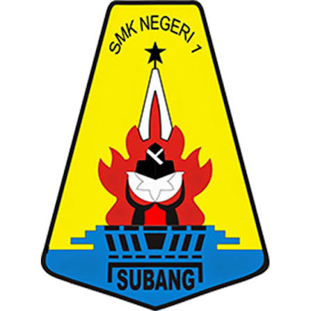

Teknik Komputer & Jaringan (TKJ)
Mempelajari instalasi jaringan, konfigurasi server, perakitan hardware, administrasi sistem, dan keamanan jaringan.

Unggul, Berkarakter, Terampil, dan Siap Kerja di Era Digital.
Jelajahi Jurusansekolah kejuruan yang berkomitmen mencetak lulusan yang unggul, berkarakter, kompeten, adaptif, dan berdaya saing melalui program unggulan Nesas BerAKSI. Nesas BerAKSI merupakan wujud komitmen sekolah dalam membentuk peserta didik melalui lima pilar utama, yaitu Berkarakter, Adaptif, Kompeten, Sinergis, dan Inovatif. Melalui pilar-pilar tersebut, peserta didik dibina agar memiliki akhlak mulia, disiplin, menguasai kompetensi sesuai kebutuhan dunia kerja, mampu beradaptasi dengan perkembangan teknologi, serta memiliki semangat berkolaborasi, peduli lingkungan, dan berjiwa wirausaha. Dengan semangat Nesas BerAKSI, kami berharap seluruh peserta didik tumbuh menjadi generasi yang cageur, bageur, bener, pinter tur singer, serta siap memberikan kontribusi terbaik bagi masyarakat, dunia kerja, dan bangsa.
Mempelajari instalasi jaringan, konfigurasi server, perakitan hardware, administrasi sistem, dan keamanan jaringan.
Berfokus pada pemograman web, aplikasi mobile, pengelolaan database, dan pengembangan perangkat lunak.
Mempelajari pencatatan transaksi keuangan, penyusunan laporan keuangan digital, dan sistem perpajakan.
Mempelajari tata kelola administrasi modern, kearsipan digital, komunikasi bisnis, dan pelayanan publik.
Berfokus pada strategi digital marketing, e-commerce, pengelolaan media sosial bisnis, dan teknik penjualan.
Mengembangkan kreativitas bidang visual seperti desain grafis, fotografi, videografi, dan animasi.
Mempelajari operasional perhotelan meliputi Front Office, Housekeeping, dan pelayanan standar internasional.
Mempelajari seni mengolah hidangan Nusantara & Internasional, pastry & bakery, serta manajemen dapur.